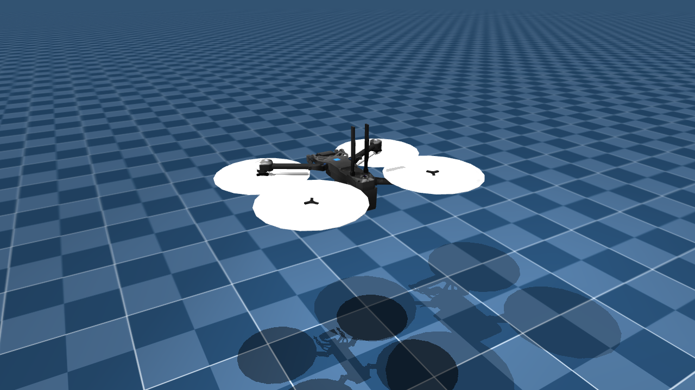
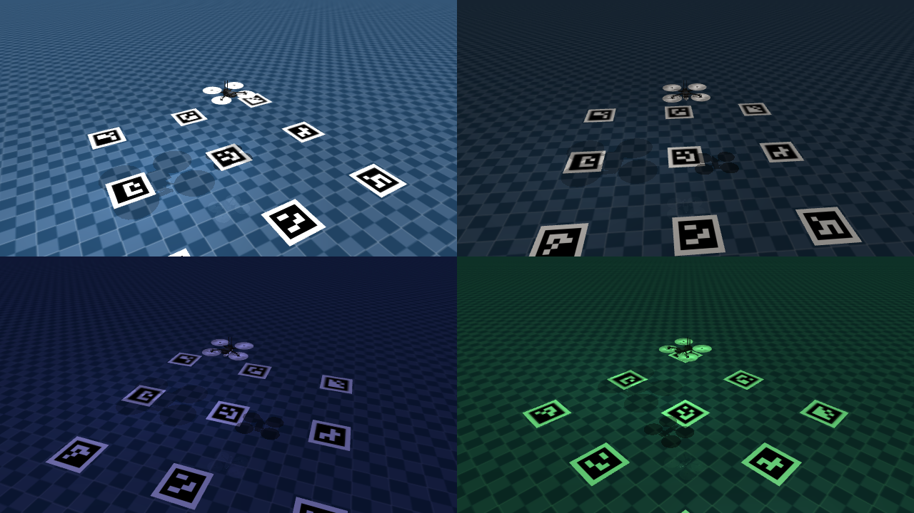

Dron nie ma GPS. Widzi tylko markery na podłodze (podgląd z jego kamery w prawym górnym rogu), a mimo to leci po zadanej trasie.

Maszyna, która sama zamyka pętlę:
czuj → myśl → działaj
…i robi to dziesiątki lub setki razy na sekundę. Nasz dron: 100 razy na sekundę.
Ramiona spawają, malują i składają samochody. Na świecie pracuje ich ponad 4 miliony.
Roboty jeżdżące pod regałami przywożą towar do pakowacza.
Filmowanie, inspekcje mostów i linii energetycznych, rolnictwo, dostawy.
Roboty czworonożne i humanoidy uczą się chodzić… głównie w symulacji.
Łaziki na Marsie i helikopter Ingenuity, który wykonał tam 72 loty.
Odkurzacze i kosiarki automatyczne: czują przeszkody i same planują trasę.
Jak nauczyć robota latać,
nie rozbijając stu dronów?
Rozbity dron w symulacji kosztuje jedno kliknięcie „od nowa”.
Nikt nie dostanie śmigłem, nic się nie zapali.
Nasz dron liczy się ok. 500× szybciej niż w rzeczywistości. 15 s lotu przez bramki = 1 s obliczeń.
Na karcie graficznej można symulować tysiące robotów równolegle i uczyć je metodą prób i błędów.
Ten sam wiatr, te same zakłócenia, więc możemy uczciwie porównać dwa regulatory.
Znamy prawdziwą pozycję i siły. W realnym świecie trzeba je dopiero zmierzyć.
U nas: wiatrkopnięciaszum kamerygubienie klatek

Uczymy na wielu wersjach świata, więc prawdziwy świat jest po prostu kolejną wersją.
Szybka i dokładna fizyka kontaktów: chwytanie, chodzenie. Open source od 2022. Standard w badaniach nad sterowaniem i uczeniem robotów. Wersje na GPU: MJX, MuJoCo Warp.
Fotorealistyczna grafika i tysiące robotów naraz na karcie graficznej. Do trenowania robotów chodzących i generowania danych do uczenia widzenia. Wymaga mocnej karty NVIDIA.
Klasyka świata ROS. Roboty mobilne, czujniki (lidar, kamery, GPS). Ten sam program steruje robotem w symulacji i na żywo.
Nowy projekt kilkunastu uczelni. W całości w Pythonie, nastawiony na ogromną szybkość na GPU. Oprócz brył sztywnych liczy też materiały miękkie i ciecze.
Inne: PyBullet (prosty, kiedyś bardzo popularny w uczeniu robotów), Webots (edukacja), CoppeliaSim, AirSim (drony, rozwój zakończony).
| Chcę… | Sięgam po… |
|---|---|
| nauczyć czworonoga chodzić (uczenie ze wzmocnieniem, tysiące prób) | Isaac Lab, MuJoCo (MJX / Warp), Genesis |
| zbudować robota mobilnego z ROS: mapa, nawigacja, lidar | Gazebo |
| badać sterowanie, chwytanie, kontakt z otoczeniem | MuJoCo |
| wygenerować realistyczne zdjęcia do uczenia sieci neuronowej | Isaac Sim |
| zacząć szybko na zwykłym laptopie, w Pythonie | MuJoCo, PyBullet |
ROS (Robot Operating System) to nie system operacyjny, tylko zestaw bibliotek i narzędzi do łączenia programów robota.
Węzły (owale) rozmawiają przez tematy (napisy przy strzałkach). Przykład dla naszego drona z dnia 3.
wizja.py → kalman.py → kontroler.py → silniki. W ROS ten sam węzeł działa z Gazebo i z prawdziwym robotem.Skydio X2 w MuJoCo: 1,3 kg, 4 śmigła, każde do 13 N ciągu.
moj_kod/ ← TU PISZESZ
pid.py kontroler.py transformacje.py
wizja.py kalman.py
dzien1/ dzien2/ dzien3/ ← zadania
testy/ ← sprawdź swój kod
narzedzia/ ← symulatory (można czytać)
wyniki/ ← tu lądują wykresy
Uruchamianie zadania:
uv run python dzien1/z4_wysokosc.py
uv run mjpython dzien1/z4_wysokosc.py # macOS
--bez-okna: szybko, na końcu wykres
uv run python sprawdz_instalacje.py # Linux, Windows
uv run mjpython sprawdz_instalacje.py # macOS
Na końcu powinno być: Wszystko gotowe! :)
Za chwilę: MuJoCo od środka, czyli jak zbudować robota z klocków.